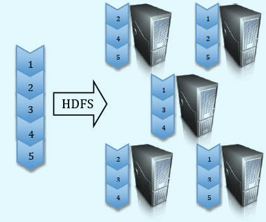
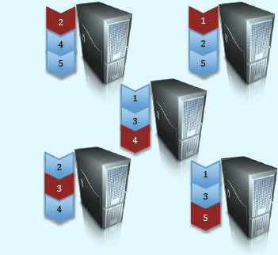
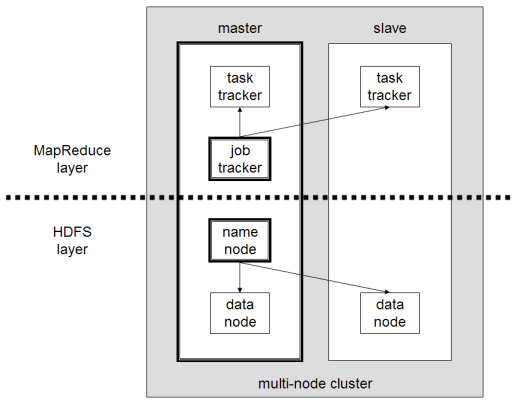

APACHE HADOOP
Aleksandra Bucior . Dawid Milewski . Marek Olszewski
W SKRÓCIE
- Framework, który pozwala aplikacjom bazującym na paradygmacie MapReduce na rozproszone przetwarzanie na klastrach dużych zbiorów danych.
- Zaimplementowany w Javie
- Obecna wersja 1.0.2 z kwietnia 2012r.
- Otwarty projekt rozwijany przez fundację Apache
TWÓRCA
- grudzień 2004 - Google - MapReduce
- --------------------- Doug Cutting - Hadoop

CZĘŚCI SKŁADOWE
HADOOP COMMON
Zbiór narzędzi, które wspierają podprojekty Hadoop'a.
Zawiera system plików, RPC (protokół zdalnego wywoływania procedur), biblioteki serializacji.
HDFS
Hadoop Distributed File System
Zapewnia niezawodne, skalowalne i tanie przechowywanie danych
MapReduce
Framework do obliczeń rozproszonych
Wykorzystuje zalety rozdzielenia i replikacji danych HDFS do rozprzestrzenienia pracy pomiędzy wiele węzłów.
Dodatki
- HBase - baza danych, wspiera przechowywanie wielkich tabel
- Pig - język (opracowany przez Yahoo), który pozwala na operacje na danych w klastrze Hadoop
- ...
Idea
Stworzony, aby rozwiązać problem szybkiej i niezawodnej analizy dużych zbiorów danych
Hadoop działa na zbiorze maszyn, każda z lokalną pamięcią i danymi. I koordynuje pracę wśród nich.
Klaster
Niezawodność
Nie wymaga interwencji administratora: sam radzi sobie z błędami na płaszczyźnie obliczeń i przechowywania danych
W przypadku awarii któregoś węzła, Hadoop kontynuuje obliczenia, rozdzielając pracę na pozostałe maszyny oraz dodatkowo replikując dane.
Kto używa Hadoop'a
- Handel
- Telekomunikacja
- Sektor finansowy
- Sieć i media cyfrowe
- Rząd
Yahoo - Facebook - Twitter - Amazon - ...
Linki
Instalacja oraz przykłady
...